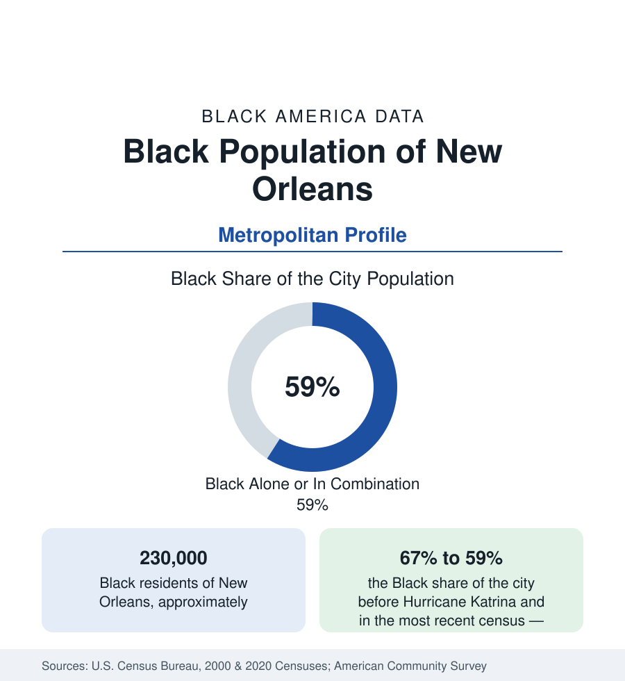

Black Cities
Black New Orleans: Before and After the Storm
New Orleans holds about 230,000 Black residents — roughly three in five of the city — remade by Katrina's displacement and a partial return. The census profile.

New Orleans holds about 230,000 Black residents — Black alone or in combination, roughly three in five of the city's 384,000 people — and a metropolitan Black population above 400,000. No profile in this section carries a before-and-after like this one's. In the census of 2000, New Orleans was two-thirds Black, a city of 484,000; Hurricane Katrina's flood in 2005 emptied it, and the population that returned over the following fifteen years was smaller and differently composed. The data record both the loss and the partial restoration of one of Black America's foundational cities.
The City Before the Storm
Black New Orleans before Katrina was the product of three centuries: a colonial city where free people of color held property and formed militias under French and Spanish rule; the greatest slave market of the domestic trade; and then, after emancipation, a Black working-class city of extraordinary cultural generation — the birthplace of jazz in its Tremé and Seventh Ward neighborhoods, of the Mardi Gras Indian tradition, of second-line parades and social aid and pleasure clubs, institutions built by and for the Black working class. Its neighborhoods — Tremé, among the oldest Black communities in the nation; the Seventh and Ninth Wards; Uptown's Central City; the lakefront subdivisions of New Orleans East, where a postwar Black middle class built one of the largest concentrations of Black homeownership in the South — formed a complete Black urban world inside a city two-thirds Black.
Displacement: The Census of a Diaspora
The flood that followed the levee failures displaced essentially the entire city, and the return was unequal in ways the data measure precisely. The city's population fell by more than half within a year; Black residents, concentrated in the lowest-lying districts — the Lower Ninth Ward above all, and New Orleans East — faced the deepest flooding and the slowest rebuilding, and on the order of one hundred thousand Black New Orleanians had not returned a decade later, even as the city's total population recovered to roughly four-fifths of its pre-storm level. The diaspora remade other cities' data: Houston's Black population carries a permanent Louisiana increment from those years, and Baton Rouge and Atlanta record their own. The demographic consequence inside the city was a Black share falling from 67 percent to about 59 percent in combination, and a Black population smaller by roughly a fifth than the one the storm displaced.
The City That Returned
The present data describe a Black New Orleans that is simultaneously continuous and changed. The cultural institutions rebuilt — the parishes, the social aid clubs, the school bands and second lines that demographers of culture treat as the city's operating system — and Black political leadership of the city continued unbroken. The composition shifted beneath the continuity: the returned population is somewhat older and, by the survey medians, somewhat better off on average than the pre-storm population, an arithmetic consequence of who could afford to return and rebuild; in-migration of younger newcomers, of all races, to the city's revived core raised housing costs across the historic districts, and the Black population of the city's center fell even where its cultural presence remained defining. New Orleans East, the great middle-class subdivision, repopulated substantially but incompletely, its retail and institutional infrastructure lagging its rooftops in the survey data.
The Metro and the Region
The metropolitan frame softens the city's losses without erasing them. Jefferson Parish, adjoining the city, holds a Black population that grew across the period — Metairie and Kenner's suburbs and the parish's own historic Black communities — and St. Charles, St. John, and the river parishes retain the region's old plantation-belt demography. The metro's Black total, above 400,000, makes greater New Orleans still one of the larger Black populations of the South, and its cultural economy — music, food, festival tourism — employs and expresses the population in proportions no dataset fully captures.
Reading the New Orleans Numbers
New Orleans is the profile where the reader must hold two censuses at once. Quoted from 2000, it is a two-thirds Black city of 325,000 Black residents; quoted from the most recent count, a three-fifths Black city of 230,000. The difference between those sentences is the largest disaster displacement in modern American data — and the partial return since is the measure of the population's attachment to the most distinctive Black city in the nation. Both figures belong in any honest account, with their years attached.
More in Black Cities
Black Atlanta: Population, Distribution, and Growth of a Black Metropolis
Metro Atlanta holds more than two million Black residents — roughly one in three, second only to New York. The suburban distribution, migration history, and composition of Black Atlanta in the census data.
Black New York: The Largest Black Population in America
The New York metropolitan area holds about 3.4 million Black residents — more than any metro in the nation — and the city itself about two million. The census profile.
Black Washington: The District and the Metro
The Washington metro holds about 1.6 million Black residents, and the District itself — long a majority-Black city — now records a Black share near 41 percent. The census profile.
Source: U.S. Census Bureau, 2020 Census; 2000 Census; American Community Survey; Population Estimates Program.